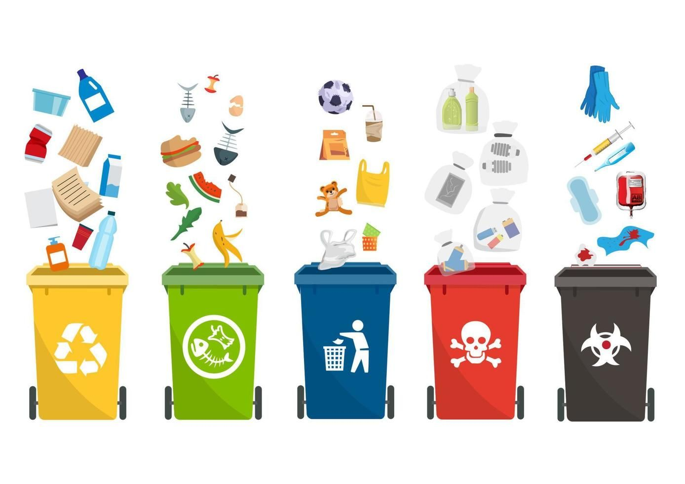

¿Que es reciclar?

Reciclar significa transformar materiales usados en nuevos productos para reducir residuos.
Materiales reciclabes
| Material | Ejemplo | Color del contenedor |
|---|---|---|
| Plastico | Botellas | Amarillo |
| Papel | Cuadernos | Azul |
| Vidrio | Botellas | Verde |
| Reciclar ayuda a reducir la contaminación | ||